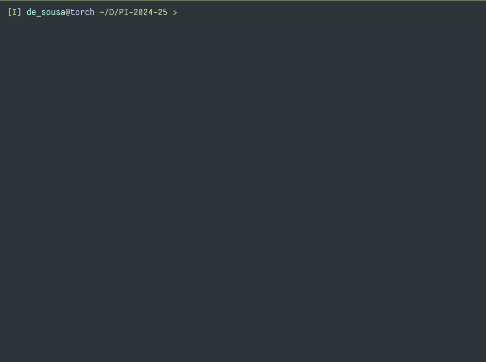

For the purpose of the grade assigned to the resolution of exercises throughout the semester, the exercises you can submit from this class are the following, which are part of the set of exercises from the last two practical classes:
Submission deadline: March 17 (submit on the Imperative Programming Mooshak)
You are encouraged to talk with the instructors and other
colleagues to ask for ideas on how to solve a problem, but you also
need to make an effort to code your solution. That is the way to become competent at programming and problem
solving, and also to become prepared for the pratical evaluations. The same is
valid for ChatGPT or other LLMs. You may
ask for suggestions on how you could solve a given problem, but also
ask it to avoid giving you the code solution.
After the deadline, the problems will remain available on Mooshak, but
submissions will no longer count toward your grade.
Each class accounts for 10% of the grade for this component.
For a problem to count, you must pass all the tests (i.e., get accepted). Even if you solve all the problems, the maximum score per class is 100%.
To achieve 100%, it will always be sufficient to solve the main exercises.
'/n') and counts the total number of lowercase letters (note: consider only ASCII letters, without accents).
Input: Hello, World!
Output: The sentence contains 8 lowercase letters.
' '), tabulation ('\t'), or line breaks ('/n').
Input: To be or not to be, that is the question.
--- William Shakespeare
Output: The text contains 13 words.
Note: the sequence "---" is considered a word and remember that Control-D signal the end of input (EOF).
Input: Programming is the art of algorithm design and the craft of debugging errant code!
Output: PROGRAMMING IS THE ART OF ALGORITHM DESIGN AND THE CRAFT OF DEBUGGING ERRANT CODE!
Hint: Use ASCII manipulation:
char lowercase = ch + 32;
Input: Hello, World!!! 03/2024
Output: Character frequency:
- Vowels: 3
- Consonants: 7
- Digits: 6
- Punctuation: 5
isalpha(): checks if a character is a letter;
isdigit(): checks if a character is a digit;
ispunct(): checks if a character is a punctuation mark.
3 + 1 + 1 + 4 + 1 + 1 + 1 = 12 points.
Input: PITF3A.L88L
Output: 12 pontos
Hint: use the previous defined isalpha() function and define another helper function to calculate the score for a single character.
void position(int a, int b, int c, int d); that, given the coordinates (a, b) and (c, d) of two points P and Q on the plane, expressed in the usual Cartesian coordinate system, characterizes the position of P relative to Q, using left, right, above, or below. If the points coincide, the function should indicate coincident. The function does not return any value, it only prints the result.position(-1, 2, 4, -1), the program prints left above;
position(4, -1, -1, 2), the program prints right below;
position(4, -1, 4, -1), the program prints coincident;
position(4, -1, 4, 3), the program prints below.
Input: Upper limit? 50
Output: 2 3 5 7 11 13 17 19 23 29 31 37 41 43 47
ANSI escape codes are a standard to control several options for the output of terminal emulators like cursor location, color, font styling, etc.
When writing the escape code, instead of printing it as text, the terminal interprets it as a control sequence and changes according to the instructions given.
For example, if you write a program with the following instruction printf("\x1b[1;31mHello\x1B[3;32m World\x1B[0m !!\n");, the program will print the sentence "Hello World !!" as following:
Hello" in bold and red
World" in italic and green
!!" in regular font style
You can also control the cursor position. After the cursor moves, if you start printing, it will overwrite whatever character was previously there.
This means that you can create small animations by overwriting the same set of cells on the terminal.
(You need to be careful for the animation to not run too fast).
The following code draws a small progress bar. Compile and run it to see the animation.
Note: The instruction printf("\x1b[2H"); moves the cursor to the beginning of the second line of the terminal.
You can learn more in this link with a reference to several escape sequences: https://gist.github.com/fnky/458719343aabd01cfb17a3a4f7296797
The final result of your program should be similar to the one illustrated below:

Content by Fernando Silva and Vanessa Silva (DCC/FCUP), copied from the original website.